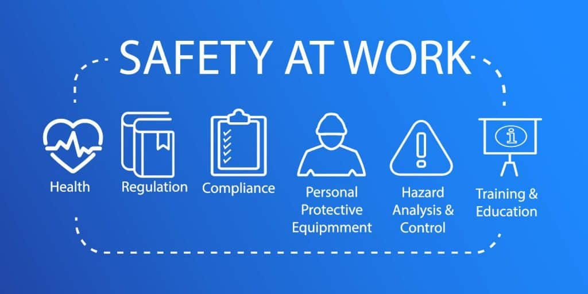

Additional Information
Be aware of the way you will implement a safe working environment. Identify, assess and manage hazards within the workplace. Inform, train and supervise your employees on safety and health practices. Ensure that incidents, injuries and illnesses are reported, recorded and investigated.
Guidance:
Health and safety
Help and information to keep people safe and healthy at work
Chemicals, fumes and dust
Using and controlling substances hazardous to health (COSHH)
The basics for your business
Your main responsibilities as an employer
Apply, notify or report
Apply for a licence, send us a form or report something in a workplace
Manage risk
Practical steps to protect people. Know the risks and plan to avoid or control them
Construction
Site safety, working at height, scaffolding and Construction Design Management
RIDDOR
Some serious workplace accidents, diseases or near misses (RIDDOR) must be reported
The law
The Health and Safety at Work Act, criminal and civil law
Asbestos
Know the dangers. Get a license to work with asbestos. Find out about training